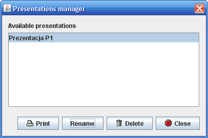

Zarządca prezentacji pozwala na dokonywanie zmian w istniejących prezentacjach i przsyłanie ich na drukarkę. Wybranie z menu głownego kolejno "Prezentacje" -> "Zarądca prezentacji" powoduje wyświetlenie poniższego okna dialogowego.
W oknie znajduje się lista dostęnych prezentacji,oraz przyciski pozwalające na
Prezentacje tworzone przez program są przygotowane do wydruku na ściśle określonych formatach papieru. Próba druku na papierach o rozmiarach innych niż podane poniżej, oraz ustawienie dowolnych marginesów nie da oczkiwanych rezultatów.
Wymgania przy drukowaniu prezentacji: